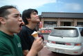

2003.07.26名古屋栄タイトロープ
VIO SYSTEM DIVIDE PRESENT SWIPING CRUSH BALL 14TH
出演:JURASSIC JADE・VIO SYSTEM DIVIDE・卍巴
DEOWND MIND・SITUPLATE・DEAFLOCK
●ＪＵＲＡＳＳＩＣ ＪＡＤＥ’Ｓ setlists
ドク・ユメ・スペルマ
くたばりやがれ
新曲2（ゴーグル）
Ｐｌａｓｔｉｃ Ｗａｔｅｒ Ｍｏｔｈｅｒ
新曲6（I found out)
新曲3（Gaza)
新曲5（Fighet For What？）
新曲4(ひこうきのうた）
メドレー（Ａｆｔｅｒ Ｋｉｌｌｉｎｇ Ｍａｍ〜CAN YOUR BIRD SING?〜D-DAY〜G.D.G）
鏡よ鏡
●ＭＥＭＢＥＲ’Ｓ comment
ＨＩＺＵＭＩ
ＮＯＢ
名古屋市内のライブハウスで同系等のライブが目白押しになってしまい、主催のスケマツ君はひやひやしてたでしょう。しかし、ライブが始まってみれば立派な客入り。
とても気持ちよくやらせてもらいました。「場」も「対バン」も「お客さん」も俺たちを力づけてくれました。
ありがとう。
GEORGE
ＨＡＹＡ
お久しぶりの名古屋です。またまたバイオ企画で、助さん呼んでくれてありがとうございます。
さて、前日風来坊で手羽を食い、会計に驚き（でも大生800円ってそんな高えってもんじゃないよね、問題は何杯飲んだかなんだよなぁ、本当なぁ）、鋭気をやしないまくりながらライブです、今日は自分のドラムっちゅう事で嬉しいですが、搬入が…死ぬほど大変なんですわ、他の人のセットの倍ぐらい重いんで…バスドラは25キロ以上あるし、スネアだけで15キロあるんでねぇ、しかも真夏日！まあ楽しい事の前には辛い事もあるっちゅうやつでんな、ええ。
ほんで大汗かきながらリハも終り、いざ本番ですが、なんか最近名古屋ってハウスが増えてないっすか？実は今日の所もお初なんすよ、ステージ回りの音も良く、スタッフの方も良いい方達でやりやすいハウスでしたが、はい。
そんなこんなで本番！久しぶりに自分のセットで重低音っぷりを堪能しながらとても楽しくやらさしていただきましたが、いかがでしたでしょうか？
あ、打ち上げでは薬がききまくりで（ちょっと体調わるかったんす、で、薬飲んだら酒飲むなって言われたんすけど…）爆睡しちゃいましたが、色々あったみたいですけど？
| ALBUM |  |
●BBS comment
今週末は… 投稿者：jjcrew 投稿日： 7月21日(月)23時35分42秒
名古屋タイトロープでのライヴ、ですね。私も同行しますので、宜しくお願いします！
それまでに梅雨が明けているといいなー。
あの博多駅前が・・・。 投稿者：NOB-JURASSIC JADE 投稿日： 7月22日(火)00時13分10秒
jjcrewに先を越されました。（笑）
26日（土）名古屋にお邪魔します。
会場：名古屋タイトロープ
タイトル：VIO SYSTEM DIVIDE PRESENTS WIPING CRUSH BALL 14TH
OPEN: 17:30 START: 18:00
ADV:1500YEN AT DOOR:1800YEN
出演BAND: JURASSIC JADE・VIO SYSTEM DIVIDE・卍巴
DROWNED MIND（大阪）・SIT UP LATE・DEAFLOCK
是非！是非！お越しください。熱〜いライブお見せします。
２６日は 投稿者：児玉浩 投稿日： 7月23日(水)00時01分06秒
DAY TRIPも行かんとかんのだけど、タイトロープにも行くツモリなんで夜露死苦ですっ(^O^)v
なんか週間天気予報によると、雨くさいで心配だけど(>_<)
7/26よろしくお願いします！ 投稿者：SKEMAZ@VIO SYSTEM DIVIDE 投稿日： 7月24日(木)21時55分03秒
土曜日はよろしくお願いします。最近のセットリストを観てると新曲が多いっすね！主催者もお客さんの一人として楽しみます！
どうか道中お気を付けていらしてください。
それではまた
>児玉くん
是非きてください！お待ちしております。
http://viosystemdivide.tripod.co.jp/
今帰ったよ(#^O^#) 投稿者：児玉浩 投稿日： 7月24日(木)23時48分19秒
今日はタダ酒飲んでご機嫌です(#^O^#)
スケマツ様＞主催ガンバって下さい(^O^)v
楽しみにしとるでね〜(^O^)/
よろしくお願いします！ 投稿者：つか 投稿日： 7月25日(金)07時58分00秒
NOBさん、書き込みありがとうございます。
明日の名古屋、とても楽しみにしています。よろしくお願いします！
すみません 投稿者：つか＠ドラウンドマインド 投稿日： 7月25日(金)08時05分45秒
バンド名書くの忘れてました。↓ドラウンドマインドであります。
出掛けます。雨じゃなくてよかった。 投稿者：NOB-JURASSIC JADE 投稿日： 7月25日(金)10時14分55秒
今回はマエノリです。まもなく出発します。
フジロックも今日から・・・。東名にも渋滞がでるようです。
じっくり名古屋に向かいます。
コメ兵や風来坊へ行きたいと思っています。
では、明日の名古屋タイトロープでのライブにみなさんのお越しを待っています。
＞児玉浩 様
待ってます。ちゃんと見てもらえるかな？
＞SKEMAZ@VIO SYSTEM DIVIDE 様
よろしくです！多分２曲は新しい曲をお聞かせできると思います。
頑張ります。
＞つか＠ドラウンドマインド 様
熱い！ライブ繰り広げましょう。
もちろん見ますよ(#^O^#) 投稿者：児玉浩 投稿日： 7月25日(金)12時22分22秒
全部のバンド見たいけど、DAY TRIPも行かなかんで難しいです(>_<)
ファームも行きたいけど、ハシゴするには遠すぎるで、早く起きれたらリハだけでも覗きに行くかもです(^_^;)
(無題) 投稿者：児玉浩 投稿日： 7月25日(金)23時36分07秒
池松様＞弱っとる画像見たよ(^_^;)
風来坊は美味しいけど高いで、次回は俺がい〜店案内します(^O^)v
俺の観光案内は、ツアバンになかなか好評だよ！？
やたらすぐ大須に連れてくけど(^_^;)
お疲れ様でした！ 投稿者：つか＠ドラウンドマインド 投稿日： 7月27日(日)15時50分25秒
ライブ、打ち上げと本当に楽しかったです。ありがとうございました。
うざい我々ですが、また遊んでやってくださいね！
昨日はお疲れです！ 投稿者：児玉浩 投稿日： 7月27日(日)17時41分24秒
打ち上げ行けんかって残念です(>_<)
DAY TRIPも行かなかんくって、ゆっくりできんで慌ただしくって、ちゃんと持て成せませんでしたが、次回はバッチリです(^O^)v
悔しいです。 投稿者：jjcrew 投稿日： 7月27日(日)20時44分23秒
名古屋行き直前になって、ドクターストップがかかって行けなくなりました。
メンバーの皆様、ご心配＆ご迷惑をお掛けいたしました…。反省です。
スタッフ失格ですな、こんなことでは。あーっ、チクショウ！（自分に怒り）
＞児玉様
というわけで、再会できずに残念だったねー。
次回は必ず！ぜひ名古屋（大須）案内をお願いします。
おいしい店に連れていってね。
あの写真を撮ったときは、痛くて時速１キロくらいで歩いていたんだよ。
＞つか＠ドラウンドマインド様
初めまして、今回同行するはずだったjjcrewと申します。
ドラウンドマインドさんのサウンドは個人的にかなりツボなので、楽しみにしていたのですが…
また共演できる日を期待しています。今後ともヨロシクです。
遅れましたがお疲れ様でした！ 投稿者：SKEMAZ@VIO 投稿日： 7月27日(日)22時24分05秒
遅れましたが、土曜日はお疲れ様＆ありがとうございました。
バッティングが多かったせいで始めお客さんの入りがわるかったですが、最終的に動員数があったので主催者としてホッとしてます。
さすがJurassic Jadeだと実感しました。
ライブの方もハヤマさんの手も治ったということでさらに増して、凄まじいライブを体験できることができました。
打ち上げではいつもの僕のシモが走ってしまいまして、ご迷惑をお掛けしました。
本当にありがとうございました。感謝します。
今後もよろしくお願いします。
>池松さん
今回は残念でしたね〜。体は本当に大切にしないといざというときに、言うことをきいてくれません。昨日行われた大坂講演で実感した今日このごろです。体には気を付けてくださいね。またお会いしましょう！！
http://viosystemdivide.tripod.co.jp/
おつかれさまでした〜 投稿者：okazzy/voidd 投稿日： 7月28日(月)12時33分52秒
名古屋お疲れ様でした 打ち上げのみ参加デ申し訳ありませんでした 打ち上げも助まチャんの下ネタで面白かったですね 次回はヒズミさんに説教してもらいたいのでよろしくお願いします！
http://www2.odn.ne.jp/~cga46880
ありがとうございました！ 投稿者：NOB-JURASSIC JADE 投稿日： 7月28日(月)21時17分32秒
名古屋タイトロープでのライブにお越しの皆さん、対バンの方々、お疲れさまでした。そして、ありがとうございました。
精一杯のライブお見せできたと思います。
感想などお聞かせくださると嬉しいです。
＞児玉浩 様
前日も当日もお疲れ様！ありがとう。
どうでしたか？ライブ。
次回オススメの所連れてってください。（花園以外）
＞つか＠ドラウンドマインド 様
お疲れ様でした。楽しいライブになったのは君たちの要素もでかいです。
これからもよろしくです。９月にロケッツでお目にかかります。
＞jjcrew 様
出順変えてもらったりして、物販もクリア。なんとかなりました。
HAYAが一番辛かったのでは・・・。
体こそ資本です。お大事に。
「風来坊」高くないよ。HAYAが飲みすぎただけのことです。（笑）
＞SKEMAZ@VIO 様
本当にありがとう！呼んでくれて。
次は俺たちがV.S.Dを呼ぶ番ですね。東京でみんなに見てもらいたいと思っています。
＞okazzy/voidd 様
打上げ来てくれて、オカジのなつかし話聞かせてくれてありがとう。
HIZUMIの説教受けられなくって残念だったね。次回に期待ということで・・・。
ノリオや奥様によろしく！
(無題) 投稿者：児玉浩 投稿日： 7月29日(火)00時08分05秒
アンコールでリクエストされそ〜な曲を、ラストにみんなメドレーされて、アンコール失敗しました(>_<)
次回はRYUKETSU NINGYOやって下さい(^O^)v
名古屋はヘルスとキャバクラとおっぱいパブと花園も名物ですが、俺もお金ないしずっと行ってませんよ(^_^;)
名駅と栄はテリトリーじゃないので、俺のテリトリーの金山、鶴舞、大須、雁道周辺だったら、いっくらでも安くて美味しくて雰囲気のい〜店案内しますよ(^O^)v
BACK TO